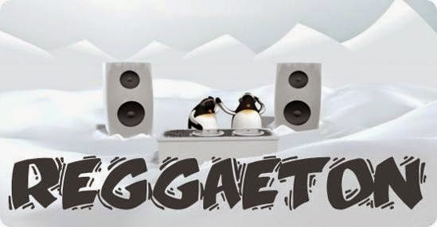

Reggaetón

El reggaetón y reguetón es un género musical variante del raggamuffin, que a su vez desciende del reggae jamaiquino, influenciado por el hip hop de las zonas de Miami, Los ángeles y Nueva York latino. Además es una de las particularidades del reggaetón son sus letras en los hablas locales del español y su influencia de otros estilos latinos, como la bomba y la salsa. Nace a partir de las fiestas en las que el DJ pinchaba la cara B instrumentales de los vinilos de reggae poniendo 45 bpm en vez de a 30, haciéndolos más movidos para bailarlos.
Página
Portada